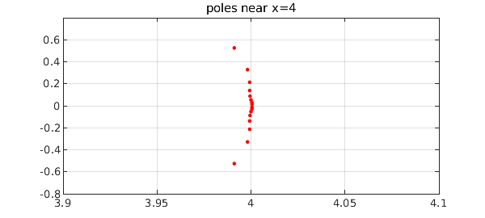

The other day I attended Heather Wilber's defense of her PhD thesis at Cornell [2]. On of the demonstrations Wilber showed was of AAA approximation of a spline function. Where does AAA place the poles? Near the spline nodes, of course, because these are points of nonanalyticity.
To illustrate, here is the spline function from the Chebfun example "Splines" of February 2013, with nodes at the integers $0,1,\dots, 10$:
x = chebfun('x',[0 10]);
f = sin(x + x^2/4);
s = chebfun.spline(0:10,f(0:10));
We compute the AAA approximation to $s$ based on 1000 sample points in $[0,10]$, and plot the poles in the complex plane. They line up near $2,3,\dots, 8$, because for this problem there are no singularities at $x= 0,1,9,10$.
X = linspace(0,10,1000)'; [r,poles] = aaa(s(X),X,'mmax',200,'tol',1e-10); MS = 'markersize'; plot(poles,'.r',MS,12) grid on, axis equal, axis([1.5 8.5 -2 2]) title(['poles of AAA approximant, ' int2str(length(poles)) ' in total'])
We zoom in near $x=4$:
clf, plot(poles,'.r',MS,10), axis([3.9 4.1 -.8 .8]), grid on title(['poles near x=4'])

Here way is the function we have been approximating, with the nodes shown as black dots.
plot(s), grid on
hold on, plot(s.ends,s(s.ends),'.k',MS,12), ylim([-1.2 1.2]), hold off
title('the spline being approximated')
The mathematics of this example is pretty striking. The function $r$ approximates a piecewise polynomial by a single global rational function, and it does it with great accuracy:
error = norm(s(X) - r(X))
error =
9.122560880232690e-11
For details of how this is possible, see [1].
References
[1] L. N. Trefethen, Y. Nakatsukasa, and J. A. C. Weideman, Exponential node clustering at singularities for rational approximation, quadrature, and PDEs, Numerische Mathematik, 147 (2021), 227-254.
[2] H. Wilber, Computing Numerically with Rational Functions, PhD thesis, Cornell University, 2021.